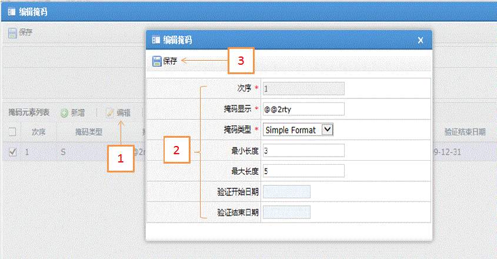

| 字段名 | 描述 |
| 次序 | 掩码元素验证的先后次序，为整正数如1、2、3、4等，编辑下次序不能更改 |
| 掩码显示 | 用来显示的掩码字符 |
| 掩码类型 | 系统提供三种类型： Simple Format(简单格式：@代表任意的A到Z的字符；#代表任意的0~9数字；^代表任意的16进制字符；?代表任意的36进制字符；.代表任意的ASCII码字符；*任意字符，只允许在掩码中出现一次；\通配符，如需要用到@可使用\@来表示) Reg Expression(规则表达式：定义掩码包含的字符范围，如[A-Z]-[0-9],则可能的值是A-0,Z-9等) Partial Checking(部分检查：掩码中@将被忽略，#将被用来验证) |
| 最小长度 | 当掩码中包含'*'时，在组装时允许输入的最小长度 |
| 最大长度 | 当掩码中包含'*'时，在组装时允许输入的最大长度 |
| 验证开始日期 | 验证对应掩码的开始日期，如果开始日期为空则结束日期也必须为空 |
| 验证结束日期 | 验证对应掩码的结束日期，如果结束日期为空则开始日期也必须为空 |
